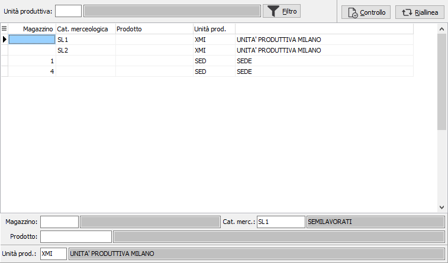

Regole di instradamento ordini
La tabella consente di definire il criterio di instradamento delle conferme d'ordine presenti o che saranno inserite al reparto di produzione.
Per criterio di instradamento si intende un filtro da applicare alle conferme d'ordine per indirizzare la produzione su di una unità produttiva piuttosto che su un altra; in caso di una unica unità produttiva sarà comunque necessario creare l'instradamento.
Se una conferma d'ordine non è "instradata", cioè non ha nessuna unità produttiva associata, non sarà prodotta perchè in fase di elaborazione non sarà creata nessuna RDP.

Il pannello di testa consente di filtrare il contenuto della griglia per una singola unità produttiva inserendo il codice e premendo il pulsante Filtro; inoltre contiene un pulsante per effettuare il controllo degli ordini per cui non è stata assegnata l'unità produttiva ed un pulsante per aggiornare gli ordini risultanti dal controllo con l'unità produttiva corretta.